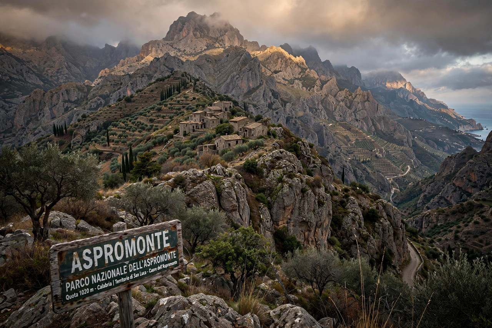

'Ndrangheta
From Wikipedia, the free encyclopedia

The 'Ndrangheta is an Italian Mafia-type criminal organisation originating in Calabria, now considered the most powerful organised-crime group in the world. Built on blood-family units ('ndrine) centred on towns of the Aspromonte and the Ionian coast, it controls much of Europe's cocaine trade (through the port of Gioia Tauro and alliances with Latin American cartels), launders globally, and has been estimated by Europol and Italian investigators to operate in over 30 countries.
Structure and history
Each 'ndrina is a family; families federate in locali coordinated (loosely) by a provincial body. Born in the nineteenth century as the picciotteria of prisoners and rural guards, the 'Ndrangheta industrialised through kidnapping in the 1970s, public-works infiltration in the 1980s, and cocaine from the 1990s. Family-based membership makes pentiti rarer than in Sicily's mafia, a structural defence against prosecution.
Reach and reckoning
Investigations from Operation Pollino (2018) to the Rinascimento-Scott maxi-trial (2019–23, 300+ defendants in a fortified Calabrian courtroom) have mapped 'Ndrangheta colonies in Germany (the 2007 Duisburg massacre announced it), Canada and Australia, and assets from restaurants to renewable-energy subsidies. Its turnover is often estimated in the tens of billions of euros annually — larger, researchers say, than many national economies of its size class.